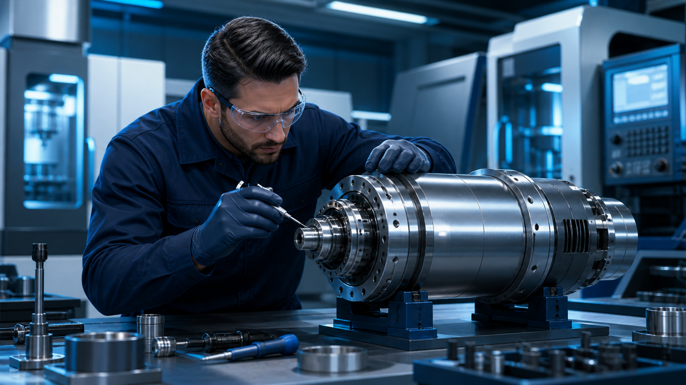

Reparación de spindles
Reconstrucción de electrospindles, spindles mecánicos, cartuchos y spindles para contrapuntos de torno CNC.
- Electrospindles
- Spindles mecánicos y cartuchos
- Contrapuntos de torno CNC
Silao, Guanajuato · Servicio nacional
Precisión que vuelve a poner en marcha tu producción. Diagnóstico, reparación y reconstrucción especializada de spindles, electrospindles y sistemas de movimiento para la industria.

Electrospindles
Maquinados de precisión
Servomotores
Electrónica industrial
Capacidad técnica integral
Atendemos componentes mecánicos, eléctricos y electrónicos con un enfoque orientado a recuperar precisión, desempeño y confiabilidad.
Reconstrucción de electrospindles, spindles mecánicos, cartuchos y spindles para contrapuntos de torno CNC.
Fabricación y recuperación dimensional de componentes para aplicaciones industriales exigentes.
Diagnóstico y reparación de servomotores y motores industriales para restablecer su funcionamiento.
Reparación de componentes electrónicos para sistemas de automatización y control.
De la falla a la solución
Comparte los datos del equipo, síntomas y necesidades de producción.
Evaluamos la condición del componente y definimos el alcance técnico.
Ejecutamos los trabajos mecánicos, eléctricos o electrónicos requeridos.
Verificamos el funcionamiento antes de devolver el equipo a operación.
Hablemos de tu equipo
Estamos en Silao, Guanajuato, con atención en el Bajío y servicio para clientes en todo el país.